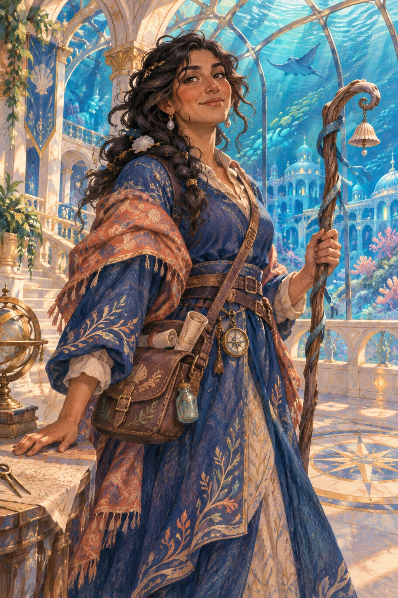
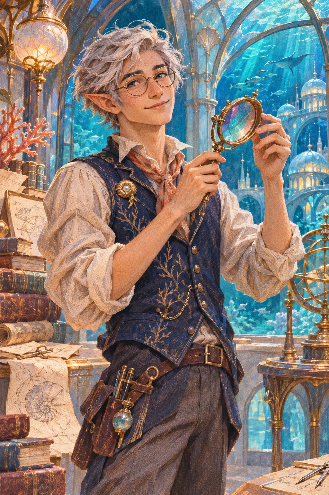
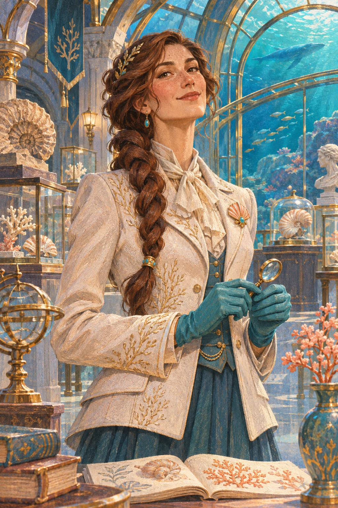
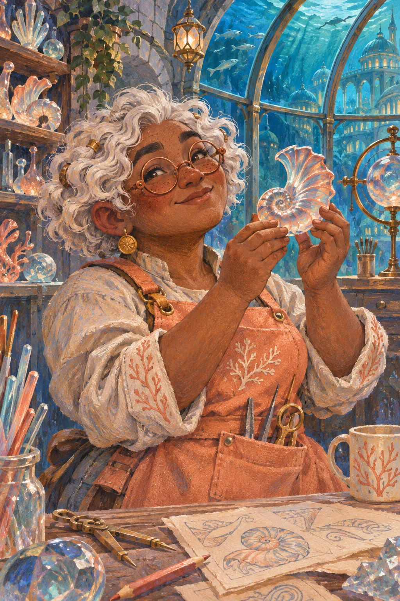
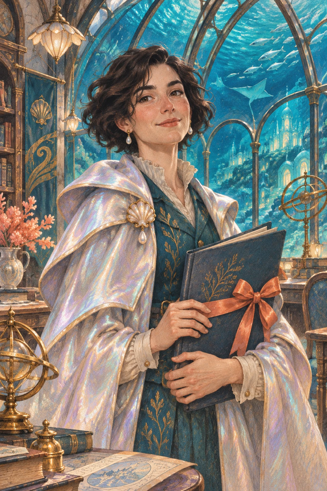
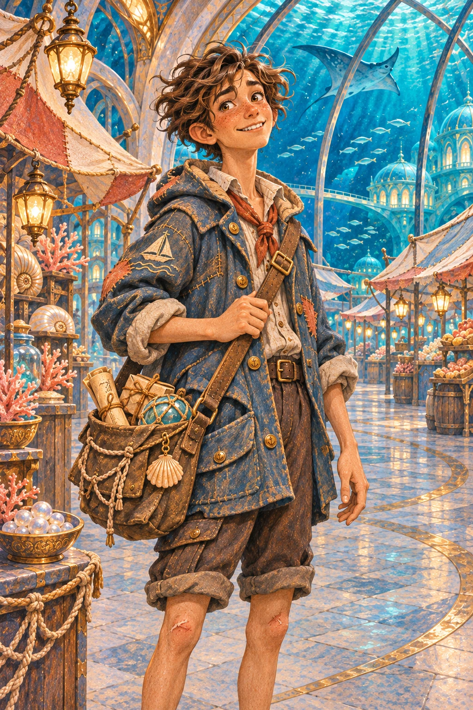
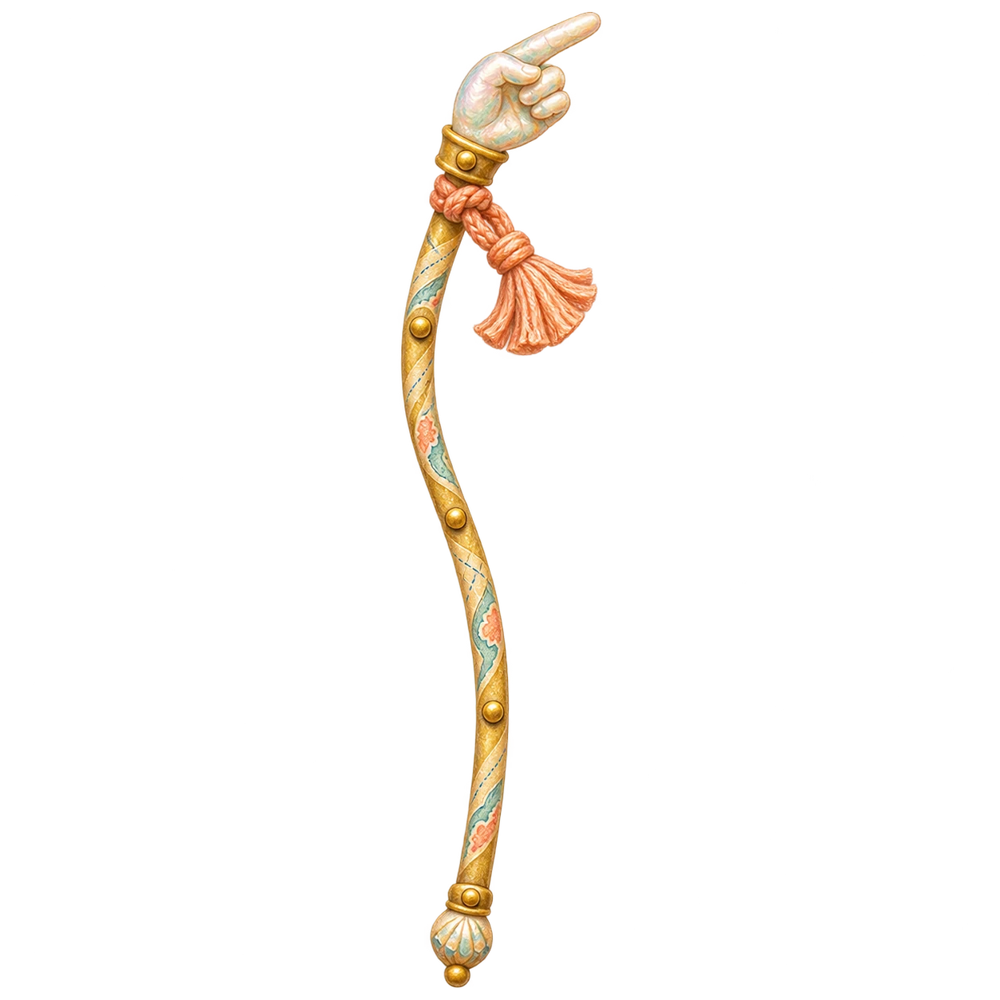

Попутчики и знакомые
Печатайте при масштабе 100%. Круги диаметром 28 мм подходят для домашних подставок. Будущих персонажей показывайте после знакомства.
















Печатайте при масштабе 100%. Круги диаметром 28 мм подходят для домашних подставок. Будущих персонажей показывайте после знакомства.






